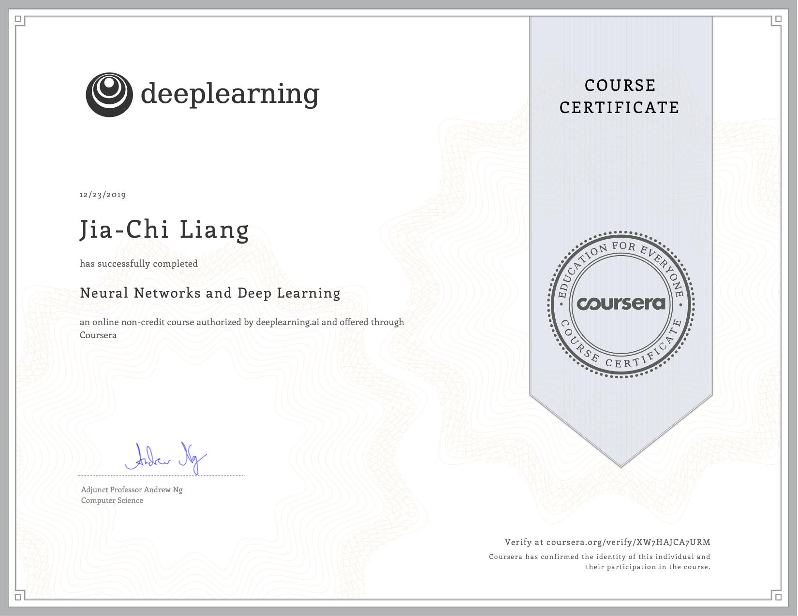
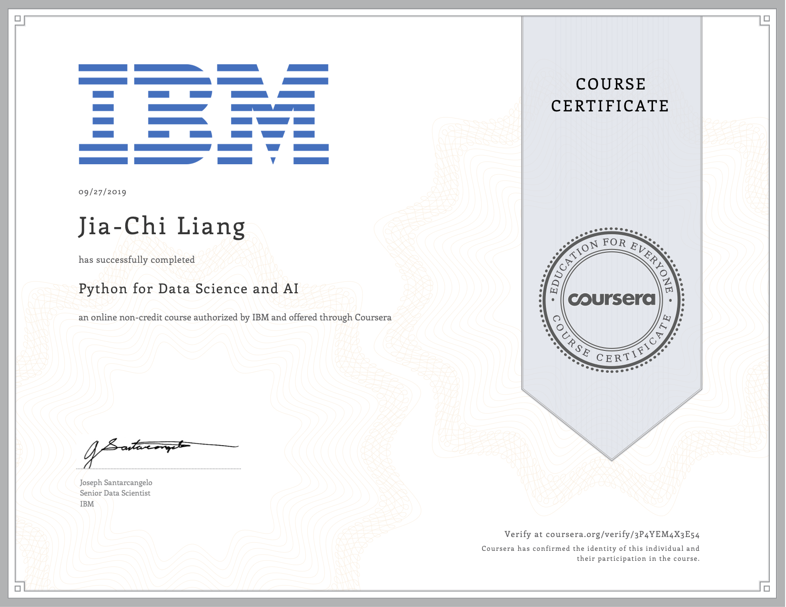
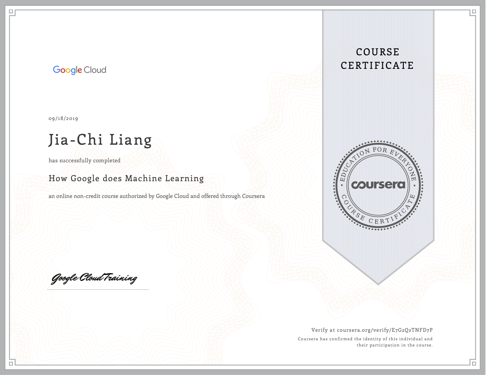

Projects
COVID19 - Who's Hiring
Covid-19 pandemic has caused layoff industry-wide, and even the most high-flying startups are feeling the effects of the virus. We hope our project can provide students with some insightful ideas as which are currently the hardest-hit industries also give recommendation in terms of which companies are likely to freeze hirings in the future based on our model so that we can optimize our job hunting strategy.
Technologies Used: Python (h2o.AutoML, selenium, seaborn, matplotlib), Tableau

Combating Employee Attrition in IT Industry
Predicted employee churn probabilities and recommend solutions to the HR department of the firm to retain these employees.
Technologies Used: R (ggplot, Logistic Regression, Random Forest)
Coursework
- Cluster Analysis
- Dimension Reduction: PCA
- Linear and Logistic Regression
- Hypothesis Testing
- Decision Trees
- Random Forest
- Gradient Boosting
- Natural Language Processing (e.g. Topic Modeling, word2vec)
MOOCS
Neural Networks and Deep Learning
This course covers the major technology trends driving Deep Learning, building, training and applying fully connected deep neural networks, implementing efficient (vectorized) neural networks, and the key parameters in a neural network's architecture.
Improving Deep Neural Networks: Hyperparameter tuning, Regularization and Optimization
This course covers the best-practice of initialization, L2 and dropout regularization, Batch normalization, gradient checking, optimization algorithms, such as mini-batch gradient descent, Momentum, RMSprop and Adam, and implementing a neural network in TensorFlow.

Python for Data Science and AI
How Google Does Machine Learning
This course covers building a pipeline of machine learning models and biases of machine learning.
